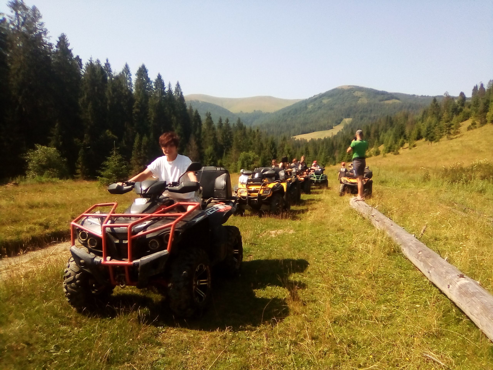

Ексакурсії та подорожі на
квадроциклах та снігоходах
Україна, Закарпатська область, село Пилипець
ПРО НАС
Пилипець — високогірне село розташоване на висоті 700-750 м над рівнем моря. Через село течуть річка Плошанка, потоки Пилипчик та Студений.
Сьогодні це відомий гірсько-лижний курорт. Траси різного рівня складності обладнані на сусідніх горах Гимба і Ряпушка. Пилипець має три бугельні витяги. Траса "Затишок" обладнана витягом ВЛ-600, довжина спуску 700 м, перепад висот 150 м, ширина — 100-200 м. На гору Гимба (1497 м) у Верхньому Пилипці ведуть витяги "Боржавські полонини" (1500 м, перепад висот між станціями 402 м) та "Магура" (900 м).
Наша компанія надає наступні послуги: екскурсії на квадроциклах, великий вибір різних маршрутів, можливість власноруч керувати квадроциклом або снігоходом, маршрути різної довжини. При організації екскурсій ми дотримуємося декількох важливих правил:
- Постійний контроль технічного стану кожного квадроцикла;
- Супровід досвідченних інструкторів на кожному маршруті;
- Інструктор проведе захоплюючу екскурсію за вашим бажанням
- Допускаємо до управління квадрациклом з 16-ти років;
- Підбір і забезпечення спеціальними засобами захисту своїх гостей;
- Виключно тверезе управління, нам важлива безпека;
- Наші квадроцикли чудово "справляються" навіть з великими людьми вагою до 160кг;
- Ми катаємося в будь-яку погоду з урахуванням всіх особливостей.
Ми зробимо все для того, щоб забезпечити Вам комфортний, безпечний і яскравий відпочинок !
Незабутні моменти
Екскурсії та подорожі на квадроциклах, захоплюючі поїздки, незабутні враження і позитивні емоції з компанією "Квадрацикли Пилипець".
- 
Контакти
Ми на карті
Наші контакти
Подорожуй з нами !!!
Маршрут 1. Підйом на гору Гимба
Маршрут 2. Підйом на Великий Верх
Маршрут 3. Екстримальний тур по Боржавському хребту
Маршрут 4. Подорож до озера Віта
Маршрут 5. Екскурсія на водоспад Шипіт
Маршрут 6. Екcтримальний тур на озеро Синевир
Маршрут 7. Тривала подорож на гору Захар Беркут